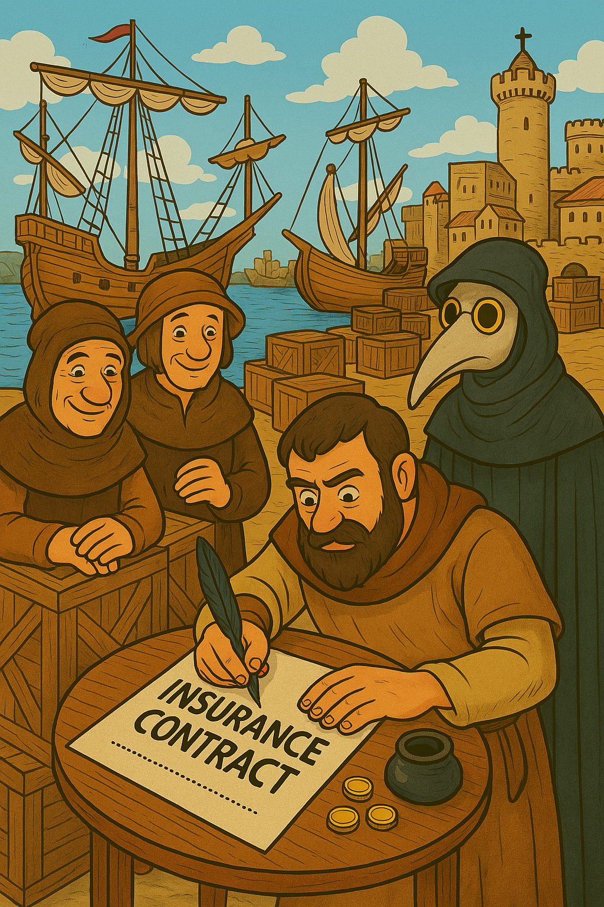

로마 제국 몰락(476 CE) 후 유럽은 봉건 사회로 전환하며 초기 보험 형태가 쇠퇴하였으나, 지중해 무역 부활과 함께 재탄생하였습니다. 이 기간은 실천적 제도와 법적 체계화가 주요합니다.
After the fall of the Roman Empire (476 CE), Europe transitioned into a feudal society, leading to the decline of early insurance forms, though it was reborn with the revival of Mediterranean trade. This period is marked by practical institutions and legal codification.
중세 초기(5~10세기)에는 로마 유산이 쇠퇴하였으나, 비잔틴 제국과 이슬람 세계에서 Rhodian Law를 이어갔습니다.
이슬람 상법(Sharia)에서 takaful(상호 보험)이 등장하여 상인들이 위험을 공동 부담하였습니다. 이는 현대 이슬람 보험의 뿌리이며, 사막 무역의 불확실성을 대처하기 위한 시스템입니다.
In the early Middle Ages (5th–10th centuries), the Roman legacy declined, but the Byzantine Empire and the Islamic world continued the Rhodian Law.
In Islamic commercial law (Sharia), takaful (mutual insurance) emerged, where merchants collectively bore risks. This forms the root of modern Islamic insurance and was a system to cope with the uncertainties of desert trade.
11~13세기에는 유럽 길드 시스템이 부상하였습니다. 상인 길드와 craftsmen's guilds에서 회원들이 회비를 내고 장례, 질병, 화재를 보상하였습니다. 이는 로마 collegia의 후예로, risk pooling의 실천적 제도입니다. 영국과 플랑드르 지역에서 활발하였으며, 도시 경제의 안정성을 높였습니다.
From the 11th to 13th centuries, the European guild system rose. Merchant guilds and craftsmen’s guilds had members pay dues to cover funerals, illnesses, and fires, a successor to Roman collegia and a practical form of risk pooling. This was active in England and Flanders, enhancing urban economic stability.
그림 3.2: 중세 길드의 상호부조, 11~13세기
14세기 르네상스 시대에는 십자군 전쟁 후 무역 폭발로 해상 보험이 탄생하였습니다. 1347년 제노바에서 기록된 최초의 별도 보험 정책이 핵심으로, 상인들이 화물 손실 위험을 보험료로 보장받았습니다.
베니스에서는 1350년경 보험 중개인이 활동하기 시작하였습니다. 이는 위험을 가격화하는 초기 계리 원리입니다. 흑사병 시대에도 상인들은 이 제도로 무역을 지속하였습니다.
In the 14th century Renaissance, the explosion of trade after the Crusades gave birth to marine insurance. The first recorded separate insurance policy in Genoa in 1347 was pivotal, allowing merchants to secure cargo loss risks with premiums.
In Venice, around 1350, insurance brokers began operating, marking an early actuarial principle of pricing risk. Even during the Black Death, merchants sustained trade through this system.
그림 3.1: 제노바의 최초 보험 정책, 1347
15~16세기에는 보험 시장이 확장되었습니다. 1435년 바르셀로나 해상 보험 규정, 1523년 피렌체 법전이 제정되었으며, 1574년 영국 엘리자베스 여왕 시대에 보험 중개소가 설립되었습니다. 재보험의 초기 형태도 등장하여 더 큰 위험을 분산하였습니다.
대항해 시대(스페인·포르투갈)의 모험적 무역이 보험 수요를 폭증시켰습니다. 이 제도는 17세기 로이드 커피하우스의 기반을 마련하였습니다.
In the 15th and 16th centuries, the insurance market expanded. The 1435 Barcelona marine insurance regulations, the 1523 Florence code, and the establishment of insurance brokerage in 1574 during Queen Elizabeth I’s reign in England were enacted. Early forms of reinsurance also emerged, distributing larger risks.
이 기간의 공통점은 경험적 위험 관리입니다. 로마의 통계적 접근이 잊힌 후 실천적 제도가 부활하며, 17세기 과학화로 이어졌습니다. 보험계리학은 아직 과학이 아니었으나, 이 뿌리가 없으면 후속 발전이 불가능하였습니다.
The adventurous trade of the Age of Exploration (Spain and Portugal) surged insurance demand. This system laid the groundwork for the 17th-century Lloyd’s Coffee House.
| 시기 | 주요 제도/사건 | 설명 | 보험계리학과의 연관성 |
|---|---|---|---|
| 5~10세기 | 이슬람 Takaful & 비잔틴 법 유산 | 상호 보험 형태와 해상 법 유지, 공동 부담 | 위험 공유의 지속, 유럽 재도입 기반 |
| 11~13세기 | 길드 상호부조 | 회원 회비로 장례/질병 보상, 도시 경제 안정 | Risk pooling의 실천적 제도 |
| 14세기 | 제노바 해상 보험 정책 (1347) | 최초의 별도 보험 계약, 보험료 도입 | 위험 pricing의 초기 형태 |
| 15~16세기 | 보험 법전 제정 (바르셀로나 1435, 피렌체 1523) | 법적 규정과 시장 확장, 재보험 등장 | 보험 산업화, 대형 위험 분산 |